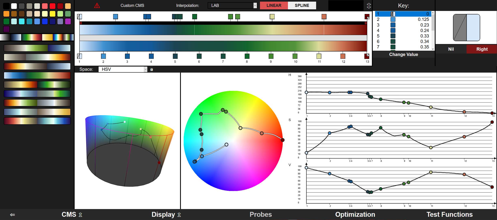

Select a Tool Variation!
CCC-Tool
The CCC-Tool based on the idea of a general tool for the creation and export of common colormaps with the effort to minimize the needed interaction components. To make this possible, we developed a colormap specification CMS. Furthermore, the tool offers different methods and functions for the analyzing and testing of colormaps. CCC-Tool supports some commonly-used color spaces and color difference metrics, currently including RGB, HSV, CIELAB (CIELCH), CIE94, CIEDE2000, and DIN99.

1. Figure: Screenshot of the CCC-Tool (Edit section).
CCBC-Tool

CCRC-Tool
Color Wiki